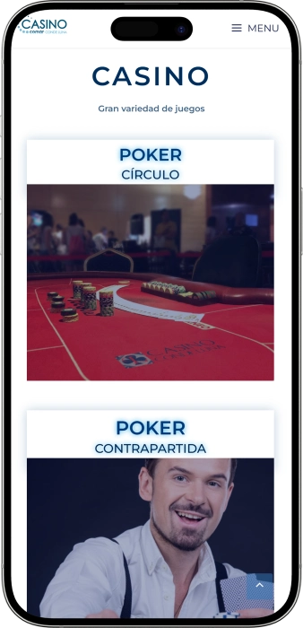

Oferta exclusiva de bienvenida de
Oferta exclusiva de bienvenida de
Casino Conde Luna — juegos, póker y ocio nocturno en pleno centro
Los mejores casinos
Detalles de bonificación
Casino
Bonos
Rate
Giros gratis
Más info
Conseguir
Ventajas
-
Torneos de póker con premios atractivos
-
Tragaperras con jackpots y pagos frecuentes
-
Ruleta y blackjack con ritmo intenso
-
Promociones de juego y bonos habituales
-
Ubicación céntrica, ideal para salir
-
Horario nocturno pensado para ocio
-
Snack bar y copas hasta tarde
- Casino Conde Luna destaca por unir juegos clásicos y una escena de póker muy viva. Es fácil combinar juego, descanso y ambiente nocturno. Encaja tanto para una visita rápida como para una noche larga.
Casino Conde Luna App


Acerca de Casino Conde Luna
Casino Conde Luna se diferencia por noches muy dinámicas y un calendario de póker constante. Además, ofrece horario amplio y una ubicación cómoda para alargar la salida.
- Jackpots en slots: hasta 10 000 €.
- Torneos de póker: premios hasta 20 000 €.
- Ruleta: pago 35:1 al pleno.
Casino Conde Luna es un casino urbano con enfoque moderno y juegos clásicos. Aquí se respira un ambiente nocturno agradable sin excesos. El espacio está pensado para moverse con comodidad entre máquinas, mesas y zona de póker.
Por la tarde y la noche el ritmo sube y el salón gana vida. Los eventos de póker aportan un punto de club donde se juega por emoción y por objetivos. Quien busca lo tradicional encuentra ruleta y blackjack con crupier. A los que prefieren partidas rápidas les encajan las tragaperras y formatos electrónicos. Entre manos, la zona de bar permite desconectar y recargar energías. Su ubicación hace que encaje bien en cualquier plan de salida. En conjunto, es un lugar que une juego, comodidad y ritmo nocturno.
Casino Conde Luna: estilo, ambiente y ocio hasta la madrugada
Casino Conde Luna se percibe como un casino urbano moderno, con el foco puesto en el ritmo nocturno. Suele destacar por una iluminación cálida, zonas de juego bien definidas y un aire “de club” sin formalidades excesivas. El ambiente encaja con quien busca juego clásico en un marco cómodo y vivo. Al caer la tarde aumenta el movimiento, especialmente en póker y mesas. Es un lugar válido tanto para ir en grupo como para una sesión individual. Su estilo se entiende como actual, práctico y centrado en la comodidad.
En cuanto a horarios, Casino Conde Luna está pensado para disfrutar de noche. Durante el día suelen tener más presencia las máquinas y los formatos electrónicos, y por la tarde se refuerza la propuesta de mesas. Mucha gente entra después de cenar, cuando empieza el tramo más animado. El horario nocturno permite jugar sin prisas y con un plan flexible. Hay que tener en cuenta que cada zona puede tener su propio ritmo de apertura, por lo que conviene ir con margen. Este enfoque lo convierte en una pieza fácil dentro de cualquier salida nocturna.
La parte de bar funciona como un punto de pausa entre sesiones. El formato de snack bar se valora por poder picar algo sin salir del ambiente. Bebidas y comida ligera ayudan a hacer la experiencia más cómoda y prolongada. El servicio suele ser directo: pides, descansas unos minutos y vuelves al juego. Para muchos visitantes es clave no tener que romper la noche buscando un sitio fuera. Así, el bar suma al conjunto en lugar de ser un simple añadido. El resultado es una experiencia más redonda y continua.
Otro punto a favor es la posibilidad de alojamiento cercano, ideal para quienes planean una visita tardía. Dormir cerca evita complicaciones y permite repartir el tiempo entre juego y descanso. Para turistas es especialmente cómodo, porque se puede unir paseo por la ciudad, noche de casino y descanso sin logística extra. En ese sentido, Casino Conde Luna actúa como un punto de encuentro muy céntrico. Este tipo de plan encaja en parejas, grupos y viajes de trabajo. La experiencia mejora cuando la noche termina con calma, no con prisas.
Los eventos y el entretenimiento suelen girar en torno al póker, noches temáticas y acciones de temporada. En esos días el ambiente se vuelve más competitivo y festivo. La regularidad de actividades importa a quien quiere volver y encontrar un formato familiar. Más allá del juego, también pesa la parte social: charlas, observar mesas y pausas en el bar. El casino encaja con quien busca no solo apuestas, sino sensaciones. La mezcla de juego, horario amplio y ubicación urbana marca su identidad.
En materia de beneficios, en Casino Conde Luna suelen aparecer entradas promocionales, incentivos para póker y acciones ligadas a máquinas. Estas propuestas hacen la visita más atractiva, sobre todo para nuevos jugadores o quienes van de vez en cuando. Las fórmulas de recompensa suelen depender de la actividad y de la frecuencia de visita. A menudo el enfoque es práctico: fichas extra, sorteos, detalles o condiciones especiales en juegos concretos. Esto ayuda a planificar la noche con un punto de ventaja. En conjunto, Casino Conde Luna combina apuestas, servicio y un esquema de promociones fácil de entender.
Servicio y dinero en Casino Conde Luna: personal, pagos y cobro de premios
El personal de Casino Conde Luna suele trabajar con el ritmo propio de un casino urbano, donde cuentan la rapidez y el trato correcto. En la entrada ayudan con la verificación de identidad y las normas de acceso, y dentro orientan sobre zonas y juegos. Los crupieres mantienen el ritmo de la mesa, aclaran dudas básicas a principiantes y controlan apuestas y pagos. En el bar el servicio tiende a ser ágil porque la gente entra “a descansar” entre sesiones. El conjunto busca que el visitante entienda rápido dónde ir y qué hacer. Eso aporta sensación de control incluso en horas de mucha afluencia.
El idioma principal en Casino Conde Luna es el español. En periodos con más visitantes y por la noche suele haber atención básica en inglés para cuestiones comunes: entrada, reglas, horarios y tipos de juego. En póker también ayuda que muchos términos son universales y se entienden con facilidad. Para eventos privados, conviene llevar preparadas las peticiones clave en español. En situaciones habituales bastan frases sencillas y un trato cordial. Incluso con un nivel básico, el visitante suele moverse con seguridad.
La moneda de uso es el euro, lo que simplifica pagos y cálculo de apuestas. Lo habitual es cambiar efectivo por fichas en caja o en el punto habilitado según la zona. En pagos suelen aceptarse efectivo y tarjetas bancarias, y en algunos casos métodos locales si están disponibles en ese momento. Para una visita cómoda, es práctico llevar parte del presupuesto en efectivo, sobre todo en horas punta. Si hay dudas, el personal puede indicar límites y condiciones de pago. Así se ahorra tiempo y la experiencia se vuelve más fluida.
Respecto a cajeros, normalmente se resuelve dentro del edificio o a muy poca distancia, ya que en zonas céntricas hay bastante disponibilidad. Cambiar divisa no suele ser el servicio principal de un casino, por lo que al viajero le conviene hacerlo antes en banco o casa de cambio. Si quedan fichas, se canjean en caja siguiendo el procedimiento estándar. Para importes elevados puede pedirse identificación adicional, algo totalmente normal. Estas medidas responden a seguridad y control de operaciones. Con ello, el proceso se mantiene claro y ordenado.
El cobro de ganancias suele ser directo: al terminar, se canjean fichas por efectivo en caja. En póker el resultado depende del formato, ya sea premio de torneo o balance de cash, pero el principio es el mismo. En pagos importantes el casino puede solicitar documento y registrar la operación según su protocolo. No es motivo de alarma: suele ser un trámite. Si se juega en varias zonas, conviene ir cerrando resultados de forma periódica. Así se controla mejor el presupuesto y también la seguridad personal.
La fiscalidad de premios depende del perfil del jugador y de las normas aplicables a su caso. Para residentes, las ganancias pueden integrarse en la base tributaria, y para no residentes el criterio puede variar según acuerdos y circunstancias. El casino normalmente no ofrece asesoramiento fiscal personalizado, aunque puede facilitar documentos de pago. Si se prevén importes altos y declaración posterior, es recomendable informarse con un profesional. Para cantidades pequeñas, la mayoría de visitantes se limita al canje estándar en caja. La idea clave es conservar justificantes si el tema fiscal es relevante.
Normas de visita en Casino Conde Luna: acceso, etiqueta y cómo llegar
Casino Conde Luna está pensado para público adulto, por eso el acceso se organiza con control de edad e identidad. Por la noche suele ser más cómodo entrar si se llega un poco antes de la hora punta, sobre todo cuando hay póker. Dentro se espera un comportamiento tranquilo y respetuoso, porque las mesas funcionan con ritmo marcado. Normalmente hay limitaciones para hacer fotos y vídeos en zonas de juego para proteger la privacidad. Existen normas internas de seguridad y el personal puede denegar la entrada si se incumplen. Para una visita cómoda conviene elegir ropa adecuada y llevar un plan de pago claro. La ubicación es buena para ir a pie, y también para llegar en taxi o transporte público. Si la salida será muy tarde, es útil prever regreso o alojamiento cercano. Los principiantes suelen sentirse más cómodos empezando por máquinas o ruleta electrónica. En conjunto, las reglas son sencillas: documento, buena presencia y respeto.
Código de vestimenta:
- • Smart casual, aspecto cuidado.
- • Calzado cerrado recomendado.
- • Evitar pantalón corto, chanclas y chaquetas deportivas.
Condiciones de acceso:
- • Entrada solo 18+.
- • Documento de identidad obligatorio.
- • Puede haber control de seguridad según el protocolo.
Prohibiciones y límites:
- • No se toleran conflictos ni conductas agresivas.
- • Restricciones de foto/vídeo en áreas de juego.
- • Posible denegación por embriaguez evidente.
Aparcamiento y cómo llegar:
- • Muy cómodo a pie desde el centro.
- • Taxi recomendable de madrugada.
- • Transporte público útil de día y tarde; de noche conviene planificar.
- • En coche, usar aparcamientos urbanos cercanos.
Programa de fidelidad de Casino Conde Luna: niveles, puntos y ventajas
El programa de fidelidad en Casino Conde Luna suele estar diseñado para premiar la constancia y la actividad en distintas zonas de juego. La idea central es clara: cuanto más regular sea la visita y la participación, más beneficios se desbloquean. Para quienes empiezan, resultan atractivas las ventajas de entrada, un bono de bienvenida y los primeros puntos acumulados. Para clientes habituales pesan más los privilegios avanzados: invitaciones a torneos, aceleración de puntos y trato preferente. La fidelidad también ayuda a optimizar el presupuesto con devoluciones, créditos o fichas promocionales dentro de campañas. Muchos valoran la comodidad: perfil del jugador, historial y operaciones más ágiles en caja. En póker, el club suele aportar ventajas prácticas como promos de buy‑in y acceso a eventos especiales. En máquinas destacan mecánicas tipo “días de cashback” y sorteos. En niveles altos aparecen detalles, consumiciones y prioridad en actividades. Las condiciones suelen variar por temporada y promociones activas, por lo que existen paquetes de ventajas. Bien aprovechado, cada visita suma valor real sin cambiar la forma de jugar. En conjunto, es una vía clave para mejorar experiencia y obtener bonos con más frecuencia.
Condiciones de registro:
- • Ser mayor de 18 y presentar documento.
- • Completar ficha de socio (datos y consentimientos).
- • Activación de tarjeta/perfil al momento.
- • Puntos solo con identificación en acceso/caja.
Niveles y cómo conseguirlos
- • Bronze (0–499 puntos/mes) — nivel base tras el alta.
- • Silver (500–1 499 puntos/mes) — visitas regulares y juego constante.
- • Gold (1 500–3 999 puntos/mes) — actividad alta y participación en eventos.
- • Platinum (4 000+ puntos/mes) — máximo nivel y ofertas personalizadas.
Cómo se suman puntos
- • Máquinas: 1 punto por 5 € de volumen.
- • Mesas: 1 punto por 10 € de apuesta media (según sesión).
- • Póker: 1 punto por 1 € de comisión/cuota (según formato).
Bonos y ventajas
- • Bono de bienvenida 10 € — para la primera sesión tras registrarse.
- • Cashback hasta 5% — devolución en créditos/bonos en días señalados.
- • Fichas bono 5–25 € — por objetivos del club (por ejemplo, visitas en días concretos).
- • Descuento buy‑in póker 5–15% — para Silver o superior en torneos seleccionados.
- • Registro prioritario en torneos — reserva anticipada (Gold/Platinum).
- • Cortesía de bar 1–2 consumiciones — al alcanzar metas mensuales (Gold/Platinum).
- • Sorteos con premios hasta 1 000 € — participación en campañas del club.
Proveedores de software
Entretenimiento y juegos e Casino Conde Luna
Bonos y ofertas especiales de Casino Conde Luna: promociones, premios y eventos de temporada
En Casino Conde Luna, además del sistema de fidelidad, suelen existir promociones independientes que hacen la visita más completa y permiten planificar la noche con ventajas puntuales. Estas acciones acostumbran a estar ligadas a días concretos, torneos, fechas festivas o a la actividad en la zona de máquinas. Las promos pueden incluir créditos de juego, entradas promocionales, sorteos y condiciones especiales en juegos seleccionados. En slots suelen aparecer mini‑competiciones por puntos, franjas de “jackpot” y dinámicas de premios rápidos. En póker destacan noches especiales con bolsa garantizada, formatos bounty y extras por mesa final. En juegos de mesa se ven más bien acciones temáticas con detalles, sorteos y recompensas para participantes activos. Otro bloque importante lo forman los eventos de temporada, que mezclan juego con ambiente festivo mediante música, decoración y propuestas gastronómicas. Normalmente estas ofertas tienen cupos y duración limitada, por lo que muchos visitantes organizan su salida alrededor del evento. Si prefieres un plan claro, conviene ir en el tramo fuerte de la promo; si buscas calma, mejor horarios con menos afluencia para jugar sin prisas. La experiencia se vuelve más interesante cuando coinciden varias mecánicas en la misma noche. Así, las ofertas especiales aportan variedad y emoción sin cambiar el estilo habitual de ocio.
- • Entrada promocional / cupón de acceso — ahorro de hasta 3 € en días seleccionados o para nuevas visitas cumpliendo condiciones.
- • Crédito de bienvenida (sin fidelidad) — bono de 10–20 € en campañas puntuales, a menudo en máquinas.
- • Torneo de slots por puntos — bolsa de premios hasta 1 000 €; gana quien acumula más puntos en un periodo fijo.
- • “Hora jackpot” en tragaperras — posibilidad de premio adicional con jackpot hasta 5 000 € en franjas marcadas.
- • Sorteo entre jugadores de la noche — acceso al sorteo con actividad mínima; premios 50–500 € o vales regalo.
- • Torneo de póker con garantizado — garantía de premios hasta 10 000–20 000 € en fechas especiales o series.
- • Noche Bounty en póker — recompensa por eliminación de 10–30 €; formato más dinámico.
- • Happy Hours en juegos electrónicos — apuestas desde 0,10 € y créditos extra 5–15 € por sesiones promocionales.
- • Noches temáticas en mesas — premios instantáneos por objetivos específicos: detalle o bono 5–50 € según reglas.
- • Eventos estacionales y festivos — sorteos especiales con premios hasta 2 000 € y sorpresas adicionales.
Juegos populares en Casino Conde Luna: lo que más se juega
Casino Conde Luna suele concentrar el interés en los clásicos de casino y en una escena de póker activa, por lo que la selección resulta familiar para la mayoría. El formato más frecuente son las tragaperras, porque permiten empezar sin preparación y con sesiones rápidas. Se eligen por variedad temática, ritmo ágil y posibilidad de premio grande en dinámicas tipo jackpot. La ruleta ocupa otro lugar fuerte, ya que combina reglas sencillas con emoción en cada giro. Para quienes prefieren estrategia, el blackjack es un clásico porque ofrece decisiones con impacto real. El póker destaca como opción social y competitiva, donde se juega contra otros jugadores y no solo contra la casa. Por la noche la zona de póker suele ganar protagonismo, especialmente en días de torneos. Para principiantes, las versiones electrónicas facilitan el acceso y reducen el “miedo” a la mesa en vivo. También son habituales el videopóker y los terminales híbridos por su comodidad. Quien busca ciclos cortos elige slots y ruleta electrónica; quien quiere sesiones largas prefiere póker o blackjack. En conjunto, el catálogo permite diseñar una noche a medida, desde ocio casual hasta juego competitivo.
- • Tragaperras (slots) — sesiones rápidas, temáticas variadas, apuestas flexibles y opciones de jackpot.
- • Ruleta (en vivo) — mesa clásica, apuestas simples y avanzadas, ritmo de casino tradicional.
- • Ruleta electrónica — terminales cómodos, ritmo rápido y barrera de entrada baja.
- • Blackjack — cartas con componente estratégico, ideal para quien busca decisiones y control.
- • Póker (Texas Hold’em y torneos) — competición entre jugadores, eventos regulares y noches especiales.
- • Póker de casino (Caribeño/contrapartida) — juego contra la casa con pagos por combinaciones.
- • Videopóker — formato rápido con decisiones “mantener/descartar” orientadas a combinaciones.
- • Juegos electrónicos especiales — terminales con modos de apuesta rápida y rondas cortas.
Apuestas mínimas y máximas en Casino Conde Luna: guía rápida
Los rangos de apuestas en Casino Conde Luna pueden variar según el juego, la hora y la afluencia. Normalmente los límites más bajos se encuentran en formatos electrónicos y en ciertas tragaperras, donde se puede empezar con importes pequeños. Las mesas en vivo suelen tener un umbral mayor, pero ofrecen la experiencia clásica con crupier. A continuación tienes referencias útiles de apuestas mínimas y máximas para organizar mejor el presupuesto de la noche.
| Juego | Apuesta mínima | Apuesta máxima |
|---|---|---|
| Tragaperras (slots) | 0,10 € | 5 € por giro |
| Ruleta electrónica | 0,10 € | 50 € por apuesta |
| Ruleta (en vivo) | 2 € | 200 € por apuesta |
| Blackjack | 5 € | 300 € por mano |
| Póker de casino (Caribeño/u otros) | 2 € | 100 € por apuesta |
| Póker cash (ciegas) | 1 €/2 € | 2 €/5 € (rango típico) |
| Torneos de póker (buy‑in) | 20 € | 200 €+ (series/eventos) |
Eventos y entretenimiento en Casino Conde Luna: ritmo nocturno, shows y actividades regulares
Casino Conde Luna se entiende como un espacio donde el atractivo lo crean los eventos de juego, el movimiento de la tarde‑noche y propuestas pensadas para el ocio tardío. La parte más visible es el póker, con torneos que marcan el ritmo de muchas jornadas y construyen una comunidad habitual. En esas noches el ambiente se vuelve más competitivo: más emoción, más espectadores y más conversación entre manos. Para quien no viene solo a jugar, destacan las noches temáticas que aportan un plus mediante música, dinamización o mecánicas promocionales. El tramo nocturno suele apoyarse en un ambiente musical tipo DJ o sesiones que acercan el espacio a una estética de club, manteniendo la etiqueta propia de un casino. También aparecen acciones ligadas a temporadas y fiestas, con decoración temática, sorteos, premios extra y propuestas gastronómicas.
Otro bloque es el ocio alrededor del deporte y de grandes citas: se combina juego con momentos de “ver y compartir” entre pausas. Además, son frecuentes los eventos privados como celebraciones, encuentros de empresa o mini‑torneos cerrados que mezclan juego y formato social. En conjunto, el entretenimiento en Casino Conde Luna no se limita a un show puntual, sino a “guiones de noche” donde cada visitante decide el ritmo: competitivo, relajado o mixto. Esto lo hace cómodo tanto para jugadores constantes como para visitas ocasionales.
- • Torneos de póker — formatos variados (clásico, knockout, estructuras rápidas).
- • Póker cash — mesas nocturnas para entrar y salir con libertad.
- • Noches temáticas de juego — promociones con premios, detalles y condiciones especiales.
- • Ambiente DJ / noches musicales — refuerzo del estilo nocturno con tono de club.
- • Eventos de temporada — noches festivas con sorteos y actividades extra.
- • Noches deportivas — seguimiento de partidos clave combinado con ocio.
- • Eventos privados — cumpleaños, empresa, encuentros cerrados bajo solicitud.
- • Sorteos promocionales — dinámicas de premios entre visitantes de la noche.
Bares, restaurantes y descanso en Casino Conde Luna: dónde parar y seguir la noche
El descanso en Casino Conde Luna suele encajar con la idea de “noche sin complicaciones”: jugar, hacer una pausa, picar algo y volver al salón. El elemento clave es el snack bar, pensado para recuperar energías entre sesiones sin salir del ambiente. El formato suele adaptarse al ritmo nocturno, con opciones ligeras, bebidas y un servicio práctico. Para muchos visitantes esto es esencial, porque el casino forma parte de una salida larga y no de una visita breve.
Si buscas un plan más gastronómico, la ubicación permite combinar juego y restaurantes cercanos con facilidad, creando un esquema tipo “cena + casino + copa”. Es un plan habitual para parejas y grupos pequeños que prefieren empezar con paseo y comida antes del juego. Para quien viaja, también es una forma de concentrar experiencia sin desplazamientos. La noche gana calidad cuando la pausa se convierte en parte del ambiente: conversar, observar el salón y retomar el juego en el momento adecuado.
El alojamiento cercano resuelve la cuestión de volver tarde. Cuando la noche se alarga, dormir cerca hace el plan más cómodo y seguro. Esto interesa especialmente a quienes vienen por póker o por sesiones largas en mesas. En conjunto, Casino Conde Luna se elige por la sensación de “noche completa”: juego, bebida, comida y descanso a mano, sin prisas.
- • Snack Bar — picoteo rápido y bebidas, ideal entre apuestas.
- • Zona de bar — copas y coctelería para descansar y socializar.
- • Restauración cercana — opción de cena antes del casino o cierre gastronómico de la noche.
- • Hotel cercano — pernocta cómoda tras eventos y juego tardío.
Preguntas frecuentes
Un documento oficial con foto y fecha de nacimiento, para verificar edad e identidad en el control de acceso.
Por lo general no hay un límite estricto: puedes estar el tiempo que permita el horario y tu comodidad.
Sí, mucha gente empieza por tragaperras o ruleta electrónica, y en mesas el crupier puede guiar con reglas básicas y apuestas.
Normalmente se registra en el propio casino, en caja o con el responsable de póker; en horas punta es mejor llegar antes y confirmar buy‑in y estructura.